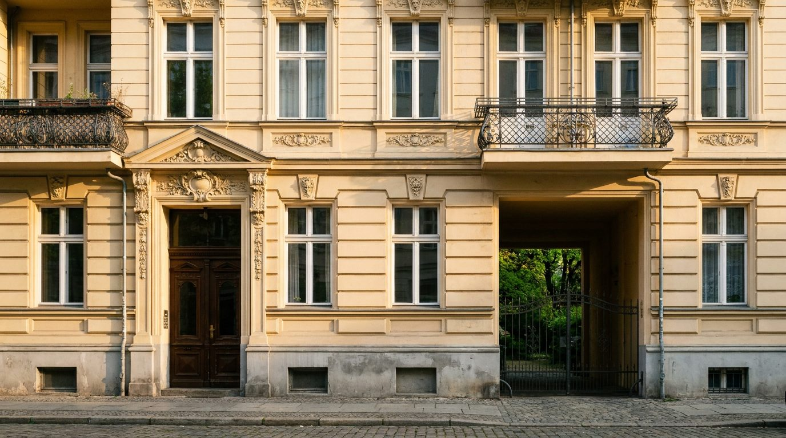
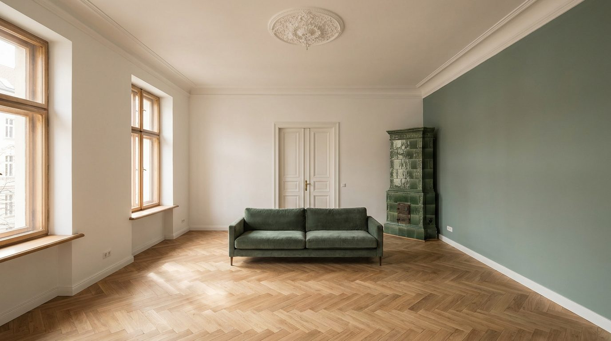

Atlante · INT-DE-01 · Germania · Europa
Appartamento Altbau a Prenzlauer Berg, stucchi, altezza e parquet a spina
Esempi · esterno e interno


Perché funziona
In Germania il cliente compra l'Altbau per l'altezza: 3,3-4,5 m di soffitto sono ciò che nessun edificio nuovo restituisce. Al catalogo serve perché è l'unico ambiente europeo dove il prodotto sta al centro della stanza senza dominarla, con pareti che salgono molto sopra il mobile: una scala da palazzo, ma borghese e quotidiana. Il made in Italy entra sul parquet a spina, con legni scuri, velluti e pietre; il prodotto deve sembrare portato dentro, non allestito. Non deve diventare la casa berlinese da affitto creativo: niente poster, niente scaffali pieni, niente lampade a sospensione colorata, niente stucchi dorati. Il dettaglio è l'edificio, non l'arredo.
Architettura · elementi riproducibili
- soffitto 3400 mm con stucco a cornice 220 mm e rosone centrale in gesso 700 mm
- finestre a due ante 1300 x 1900 mm, telaio in legno 65 mm, davanzale 300 mm
- parquet a spina di pesce in rovere 90 x 600 mm, posa a 45 gradi rispetto alla finestra
- doppia porta a due battenti 2600 mm con specchiatura e maniglie in ottone opaco
- stufa in maiolica smaltata 900 x 2100 mm nel soggiorno, canna in muratura
- cucina originale 3200 x 600 mm con ante in legno e piano in pietra, altezza 900 mm
- un divano basso 2200 mm in velluto salvia e un tavolo in legno 1600 mm: nessun altro arredo
Fatto verificato: nel mercato immobiliare tedesco il termine Altbau richiama gli elementi tipici dell'edilizia della rivoluzione industriale e della Gründerzeit: altezze e superfici finestrate generose, ornamenti, stucchi e pavimenti in parquet o in tavole.
Fatto verificato: gli appartamenti urbani costruiti prima della seconda guerra mondiale hanno spesso soffitti da 3,3 m e oltre, e le case della Gründerzeit arrivano in casi estremi a 4,5 m.
Fatto verificato: Prenzlauer Berg, frazione del distretto di Pankow, consiste in larga parte di quartieri della Gründerzeit; nell'espansione ottocentesca vi nacquero file chiuse di case a quattro piani con facciate semplici e pochi balconi.
Valutazione: la voce tiene il registro quiet perché l'Altbau è già saturo di dettaglio; il colore si limita a una parete salvia, e gli stucchi restano bianco calce per non trasformare la stanza in una torta.
Luce
Prompt di generazione (EN)
Interior photograph of a Berlin Altbau living room in Prenzlauer Berg, 3.4 m ceiling with a 220 mm plaster cornice and 700 mm centre rose, chalk-white mineral walls with one dusty sage wall as the only colour field, herringbone oak parquet 90 x 600 mm oiled matte laid at 45 degrees to the window, a 2600 mm panelled double door with matte brass handles, a 900 x 2100 mm glazed tile stove in the corner, two 1300 x 1900 mm timber windows with 300 mm sills. One low 2200 mm sage velvet sofa is the only furniture. Single key light from the window, camera left, 35 degrees, 5100 K, soft long shadows across the parquet, no lamps, neutral white balance. 30 mm lens at 1.3 m, two-point perspective, verticals parallel, quiet grade, no people, no text, no logos.